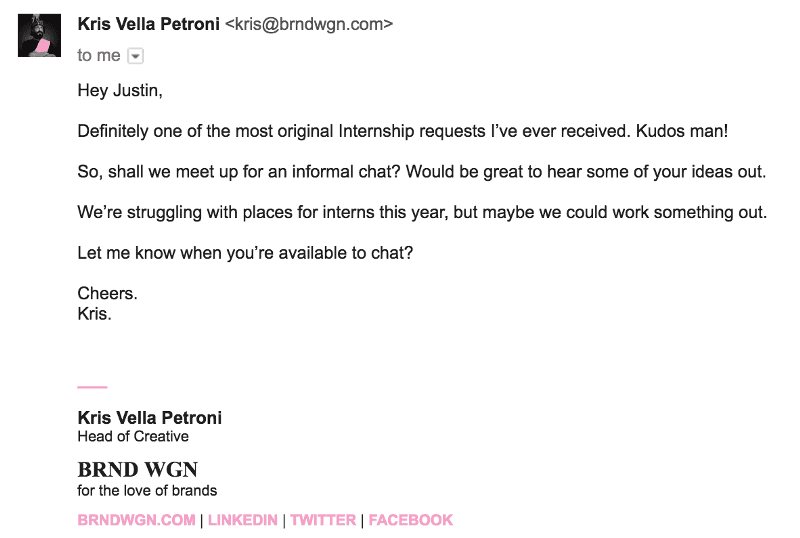

Doing something about it.
Not doing anything was holding me back tenfold. So, I grabbed my trusty pencil and pad, and started sketching ideas. I had read about Nina Muffleh some time ago, who went above and beyond by building a website so that she could land a position at Airbnb and get recruiters talking.
As a self-starter myself, I really respected her drive and commitment as well as her courage. Naturally, I was influenced by her approach. So I went ahead and decided to do the same kind of thing to land that internship. So I built a website and well, here it is.
Admittedly, that one-pager accompanied with a pretty boldly worded email took some courage. I mean it’s not like I knew these guys, I just heard the CEO (Hey Pete) speak at a local meetup and was like “Man these guys seem like they do great work”. Two days after finally pressing send, an email from the Head of Creative showed up in my inbox. That fourth line was a bit heart-wrenching, but nevertheless I visited the office to have a chat, and was offered an internship.

What I took away
Like many interns on their first day, I had that weird blend of contrasting emotions namely fear, occasional arrogance and a willingness to impress. Throughout my time at the wagon I was exposed to a set of briefs which had to be tackled differently as opposed to how I built stuff alone in my room at my desk.
One of my very first briefs was to design and build a banner advert that promoted the company’s 10 year anniversary. At first I wasn’t sure that what I was doing, was really UX work per-se. It seemed like a trivial task handed off to an intern, but boy was I wrong.
As an adblock user, I had brought up the ‘why are we actually doing this’ several times and backed up my argument with some numbers about ad viewability and click through rates. One thing I fundamentally forgot however was the user . The person I would be designing for, probably wouldn’t be aware of ad blocking software.
Another thing I learnt was designing with intentionality, especially when I worked on one particular landing page that went through several iterations. Apart from knowing my audience, setting a success criteria and looking out for conversion metrics, the thing that I needed to be mindful of was ultimately, the purpose . If I knew the why when I was tasked with building something, then I could tackle the problem better.
After a long day, I never went home to the feeling that I was not so great at using that one tool that almost everyone in the office was so good with. Instead, I sort of kept a log at the back of my mind with the conversations I would have had during a critique or a brainstorming session.
Better soft skills, an open mind, and collaboration were a necessity if I was to do well. The most important lesson of all though was that design was a team sport, whenever there were more heads involved, great products usually followed.
A parting gift
As a sort of thank you note to show my appreciation to the team for their support and their patience for when I had way too many questions lined up, I built a sort of blueprint for future wagoneers and/or new hires. You can check that out here.
I’m in no way an authorative figure on design (yet). Naturally, I still have a lot to learn, but this internship was definitely a step in the right direction. As for the future? Well we’ll see. Till then have a good day reader!